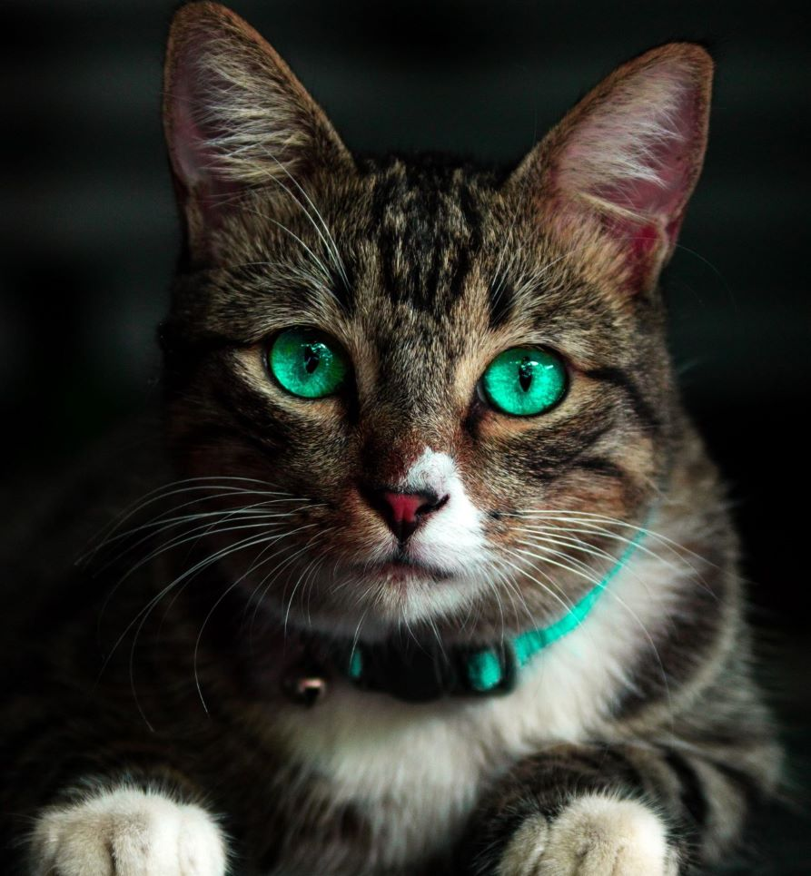

INDICE
CARACTERISTICAS DE LOS GATOSHABITAT DE LOS GATOS
HISTORIA DE LOS GATOS
IMAGENES DE GATOS--
HAZ CLICK AQUI PARA VER IMAGENES DE GATOS
Los gatos utilizan el lenguaje corporal a la hora de comunicarse. Frotarse contra un objeto, lamer y ronronear son muestras de afecto. El ronroneo puede ser muestra de cualquier emoción extrema, como dolor. Un gato con dolor ronronea para mostrar a los humanos
Este comportamiento se usa principalmente para reclamar la posesión de algo, cada gato libera una combinación de feromonas diferente desde las glándulas de sus mejillas, al lado de la boca, por lo que pueden marcar algo frotándolo con el hocico. También tienen este tipo de glándulas en la base de la cola, por lo que cuando un gato se frota contra tu pierna también intenta frotar el final de la espalda para reclamarte como propiedad. Los gatos también pueden marcar con sus garras. Al arañar se vuelven a liberar rastros de feromonas que se transfieren al objeto que arañan. Al contrario que los gatos macho, las hembras y los machos emasculados no suelen marcar con orina. El único caso en el que las hembras marcan con orina es durante el celo, para que los machos las puedan encontrar
El amasamiento es una actividad común en los gatos domésticos. Cuando están tranquilos, presionan y jalan con sus patas delanteras, alternando la izquierda y la derecha. Algunos gatos aparentan cuidar o mamar de la prenda o de la cama durante el amasamiento. Como muchos de los animales domésticos, pero especialmente perros y gatos, retienen características y recuerdos juveniles
CARACTERISTICAS
Tienen una flexibilidad y agilidad impresionante, pueden saltar desde más de 3 metros de altura. Los gatos pueden rotar sus orejas 180 grados. Los gatos pueden pasar hasta 14 horas dormidos. Debido a su naturaleza nocturna, los gatos suelen ser mucho más hiperactivos en la tarde.La audición del gato promedio es al menos cinco veces más aguda que la de un adulto humano. En la raza de gato más grande, el macho promedio pesa aproximadamente 9 kilos. Los gatos domésticos pasan cerca del 70 por ciento del día durmiendo, y 15 por ciento del día acicalándose. Un gato no puede ver directamente debajo de su nariz. Tienen uno de los sistemas sensoriales más sofisticados del mundo. La mayoría de los gatos no tiene pestañas. Los gatos tienen cinco dedos en cada pata delantera, pero sólo cuatro en la parte posterior. Sin embargo, no es raro que los gatos tengan dedos extra. ¡El gato con la mayor cantidad de dedos conocidos tenía 32, ocho en cada pata! Algunas personas creen que si sueñas con un gato blanco, te seguirá la buena suerte. Los maullidos no son un lenguaje innato para gatos, ¡los desarrollaron para comunicarse con los humanos! Visita ¿Por qué lloran los gatos? para descubrir más sobre sus maullidos y sus significados.
HABITAT
El gato salvaje vive en bosques, y en lugares poco degradados y alejados de los núcleos urbanos. Típicamente forestal, puede ocupar, asimismo, las malezas y los matorrales densos que le ofrecen suficiente cobertura, así como las zonas con abrigos rocosos.El gato salvaje fue exterminado por el ser humano en numerosas regiones del centro de Europa en el transcurso del siglo pasado, y hoy en día no se encuentra en gran número más que en los montes Cárpatos. Se encuentra protegido desde hace varios años mediante su inclusión en el anexo II del convenio CITES. En la península ibérica su distribución y su número se han reducido enormemente; históricamente ocupaba la práctica totalidad del territorio ibérico, y en la actualidad sigue presente en prácticamente todas las provincias españolas y portuguesas, pero solo en zonas de bosque. Se cree que su población europea está en franca regresión aunque, quizás por la dificultad de estudio mencionada, la UICN lo incluye en su Lista Roja como amenazado.
HISTORIA
El gato doméstico -Felis catus es su nombre ciéntifico- es una subespecie de mamífero carnívoro de la familia de Felidae. Se cree que está en convivencia con el ser humano desde hace unos 9.500 años. A modo coloquial se les llama minino, micho o incluso mizo.A la hora de hablar del origen de la especie se pueden seguir dos caminos: uno el de la leyenda y otro el de la historia. Los dos son, les aseguro interesantes e incluso entretenidos. Ya saben del dicho, «a la cama no te irás sin saber una cosa más» y esta información de hoy bien puede servir para conocer un poco más sobre su gato... si ese que en este mismo momento dormita junto a usted en su sillón, mientras pasa su áspera lengua por una de sus patas. Para conocer su origen según la leyenda hay que remontarse al Diluvio Universal. Cuentan que llevando Noé algunas semanas de navegación descubrió con horror que su nave estaba infestada de ratones. La pareja original de estos pequeños roedores había proliferado con tanta rapidez, que sus descendientes multiplicaban las incomodidades del arca... además los ratones estaban acabando con las existencias de alimento para el resto del pasaje. Noé se dirigió al león para pedirle su parecer. Este que pertenece a los grandes felinos, meditó la suplica y concentrando todas sus fuerzas, suspiró profundamente, arqueó la espalda y estornudó con un gran estruendo, expulsando por la nariz una pareja de gatos. De inmediato, iniciaron sin que nadie les diera el aviso su obra destructora, exterminando a todos los ratones que había en la nave, salvo una pareja que Noé capturó y encerró para perpetuar la especie. Según dice esa leyenda que desde ese instante el gato se mostró engreído, altivo y arrogante y como castigo Noé lo ató al puente del arca cuando más arreciaba la tormenta. A consecuencia de este castigo, no es de extrañar el terror que la mayoría de los gatos sienten por el agua.
COSAS QUE LOS GATOS AMAN
- menta gatuna
- apuntadores laser
- lasaña
- bolas de estambre

COSAS QUE LOS GATOS ODIAN
- el agua
- los truenos
- tratamientos antipulgas
- otros gatos